Binary heap
结构
从二叉堆的结构说起，它是一棵二叉树，并且是完全二叉树，每个结点中存有一个元素（或者说，有个权值）．
堆性质：父亲的权值不小于儿子的权值（大根堆）．同样的，我们可以定义小根堆．本文以大根堆为例．
由堆性质，树根存的是最大值（getmax 操作就解决了）．
过程
插入操作
插入操作是指向二叉堆中插入一个元素，要保证插入后也是一棵完全二叉树．
最简单的方法就是，最下一层最右边的叶子之后插入．
如果最下一层已满，就新增一层．
插入之后可能会不满足堆性质？
向上调整：如果这个结点的权值大于它父亲的权值，就交换，重复此过程直到不满足或者到根．
可以证明，插入之后向上调整后，没有其他结点会不满足堆性质．
向上调整的时间复杂度是 $O(\log n)$ 的．

删除操作
删除操作指删除堆中最大的元素，即删除根结点．
但是如果直接删除，则变成了两个堆，难以处理．
所以不妨考虑插入操作的逆过程，设法将根结点移到最后一个结点，然后直接删掉．
然而实际上不好做，我们通常采用的方法是，把根结点和最后一个结点直接交换．
于是直接删掉（在最后一个结点处的）根结点，但是新的根结点可能不满足堆性质……
向下调整：在该结点的儿子中，找一个最大的，与该结点交换，重复此过程直到底层．
可以证明，删除并向下调整后，没有其他结点不满足堆性质．
时间复杂度 $O(\log n)$．
增加某个点的权值
很显然，直接修改后，向上调整一次即可，时间复杂度为 $O(\log n)$．
实现
我们发现，上面介绍的几种操作主要依赖于两个核心：向上调整和向下调整．
考虑使用一个序列 $h$ 来表示堆．$h_i$ 的两个儿子分别是 $h_{2i}$ 和 $h_{2i+1}$，$1$ 是根结点：
参考代码：
void up(int x) {
while (x > 1 && h[x] > h[x / 2]) {
std::swap(h[x], h[x / 2]);
x /= 2;
}
}
void down(int x) {
while (x * 2 <= n) {
t = x * 2;
if (t + 1 <= n && h[t + 1] > h[t]) t++;
if (h[t] <= h[x]) break;
std::swap(h[x], h[t]);
x = t;
}
}
建堆
考虑这么一个问题，从一个空的堆开始，插入 $n$ 个元素，不在乎顺序．
直接一个一个插入需要 $O(n \log n)$ 的时间，有没有更好的方法？
方法一：使用 decreasekey（即，向上调整）
从根开始，按 BFS 序进行．
void build_heap_1() {
for (i = 1; i <= n; i++) up(i);
}
为啥这么做：对于第 $k$ 层的结点，向上调整的复杂度为 $O(k)$ 而不是 $O(\log n)$．
总复杂度：$\log 1 + \log 2 + \cdots + \log n = \Theta(n \log n)$．
（在「基于比较的排序」中证明过）
方法二：使用向下调整
这时换一种思路，从叶子开始，逐个向下调整
void build_heap_2() {
for (i = n; i >= 1; i--) down(i);
}
换一种理解方法，每次「合并」两个已经调整好的堆，这说明了正确性．
注意到向下调整的复杂度，为 $O(\log n - k)$，另外注意到叶节点无需调整，因此可从序列约 $n/2$ 的位置开始调整，可减少部分常数但不影响复杂度．
???+ note "证明" $$ \begin{aligned} \text{总复杂度} & = n \log n - \log 1 - \log 2 - \cdots - \log n \ & \leq n \log n - 0 \times 2^0 - 1 \times 2^1 -\cdots - (\log n - 1) \times \frac{n}{2} \\ & = n \log n - (n-1) - (n-2) - (n-4) - \cdots - (n-\frac{n}{2}) \ & = n \log n - n \log n + 1 + 2 + 4 + \cdots + \frac{n}{2} \ & = n - 1 \ & = O(n) \end{aligned} $$
之所以能 $O(n)$ 建堆，是因为堆性质很弱，二叉堆并不是唯一的．
要是像排序那样的强条件就难说了．
应用
对顶堆
??? note "SPOJ RMID2 - Running Median Again" 维护一个序列，支持两种操作：
1. 向序列中插入一个元素
2. 输出并删除当前序列的中位数（若序列长度为偶数，则输出较小的中位数）
这个问题可以被进一步抽象成：动态维护一个序列上第 $k$ 大的数，$k$ 值可能会发生变化．
对于此类问题，我们可以使用 对顶堆 这一技巧予以解决（可以避免写权值线段树或 BST 带来的繁琐）．
对顶堆由一个大根堆与一个小根堆组成，小根堆维护大值即前 $k$ 大的值（包含第 k 个），大根堆维护小值即比第 $k$ 大数小的其他数．
这两个堆构成的数据结构支持以下操作：
- 维护：当小根堆的大小小于 $k$ 时，不断将大根堆堆顶元素取出并插入小根堆，直到小根堆的大小等于 $k$；当小根堆的大小大于 $k$ 时，不断将小根堆堆顶元素取出并插入大根堆，直到小根堆的大小等于 $k$；
- 插入元素：若插入的元素大于等于小根堆堆顶元素，则将其插入小根堆，否则将其插入大根堆，然后维护对顶堆；
- 查询第 $k$ 大元素：小根堆堆顶元素即为所求；
- 删除第 $k$ 大元素：删除小根堆堆顶元素，然后维护对顶堆；
- $k$ 值 $+1/-1$：根据新的 $k$ 值直接维护对顶堆．
显然，查询第 $k$ 大元素的时间复杂度是 $O(1)$ 的．由于插入、删除或调整 $k$ 值后，小根堆的大小与期望的 $k$ 值最多相差 $1$，故每次维护最多只需对大根堆与小根堆中的元素进行一次调整，因此，这些操作的时间复杂度都是 $O(\log n)$ 的．
??? note "参考代码"
cpp
--8<-- "docs/ds/code/binary-heap/binary-heap_1.cpp"